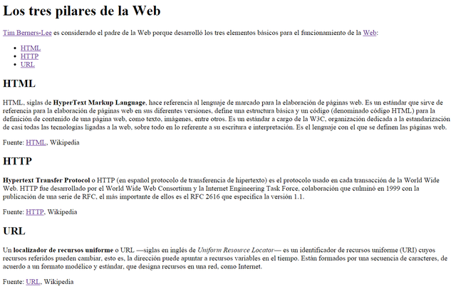

A partir del texto que se te proporciona, debes crear una página web que tenga el mismo aspecto que la imagen se mostrara mas abajo.
Además, tienes que tener en cuenta los siguientes requisitos:
Los enlaces que aparecen en la página deben tener los siguientes destinos:
Consejo: para comprobar que los enlaces intradocumentales funcionan correctamente, aumenta el tamaño o zoom de la página con "Control +"
El resultado final debe ser una página web que tenga el mismo aspecto que la siguiente imagen:
Tim Berners-Lee es considerado el padre de la Web porque desarrolló los tres elementos básicos para el funcionamiento de la Web:
HTML, siglas de HyperText Markup Language, hace referencia al lenguaje de marcado para la elaboración de páginas web. Es un estándar que sirve de referencia para la elaboración de páginas web en sus diferentes versiones, define una estructura básica y un código (denominado código HTML) para la definición de contenido de una página web, como texto, imágenes, entre otros. Es un estándar a cargo de la W3C, organización dedicada a la estandarización de casi todas las tecnologías ligadas a la web, sobre todo en lo referente a su escritura e interpretación. Es el lenguaje con el que se definen las páginas web.
Fuente:HTML, Wikipedia
Hypertext Transfer Protocol o HTTP (en español protocolo de transferencia de hipertexto) es el protocolo usado en cada transacción de la World Wide Web. HTTP fue desarrollado por el World Wide Web Consortium y la Internet Engineering Task Force, colaboración que culminó en 1999 con la publicación de una serie de RFC, el más importante de ellos es el RFC 2616 que especifica la versión 1.1.
Fuente:HTTP, Wikipedia
Un localizador de recursos uniforme o URL —siglas en inglés de Uniform Resource Locator— es un identificador de recursos uniforme (URI) cuyos recursos referidos pueden cambiar, esto es, la dirección puede apuntar a recursos variables en el tiempo. Están formados por una secuencia de caracteres, de acuerdo a un formato modélico y estándar, que designa recursos en una red, como Internet.
Fuente:URL, Wikipedia